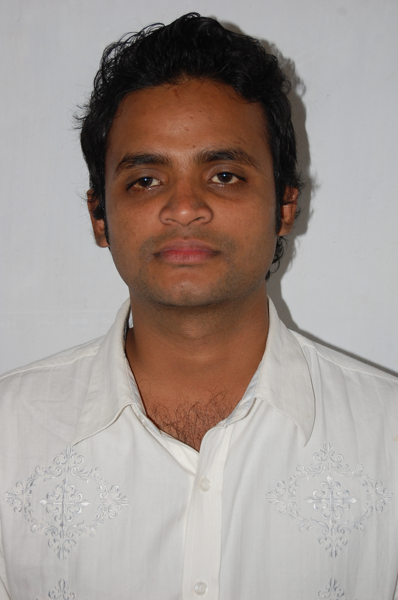

|  |
ROBIN BHUIYAN
Lean Six sigma practitioner |
|
|
|
CONTACTrobinbhuiyan0372@gmail.com+88 01675287217 Dhaka, Bangladesh GitHub EDUCATIONBachelor of ScienceIndustrial & Production Engg,SUST 2005 - 2010 CGPA: 3.20 SKILLS
|
WORK EXPERIENCEHead of IEZaber & Zubair Fabric Ltd.Tongi, Gazipur 2024 - Present
PROJECTSTask Management System
|